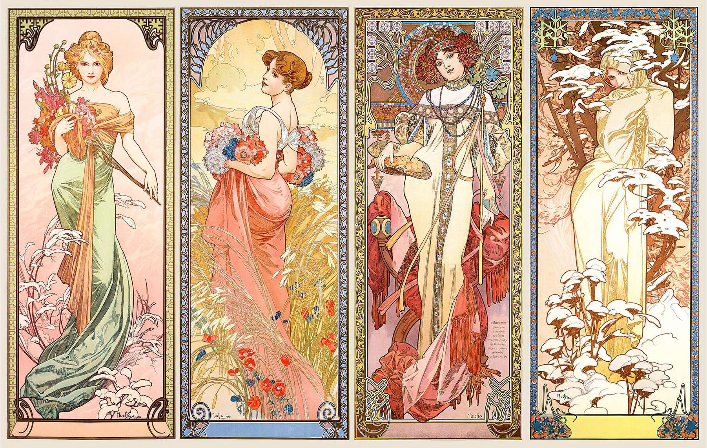
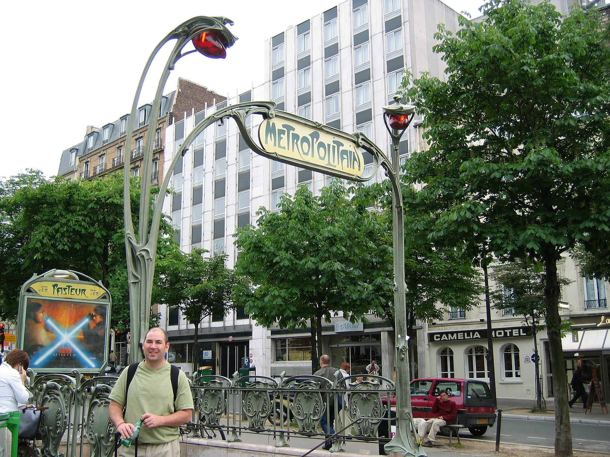

대표 화가
알폰스 무하, 《사계》 · 아르누보 · 프랑스·벨기에
선정 이유: 무하의 연작 포스터는 유기적 선, 장식적 평면, 대량 인쇄가 결합된 프랑스권 아르누보를 가장 친숙하게 보여 준다.
여성의 머리카락과 식물 줄기, 테두리 무늬가 끊기지 않는 곡선으로 이어진다. 순수회화와 상업 포스터의 경계를 낮추고 동일한 양식을 일상 시각문화에 퍼뜨린다는 아르누보의 목표가 드러난다.
Art Nouveau
연결 학습
아르누보는 19세기 말 산업 생산과 역사 양식의 반복에 대응해 건축, 가구, 공예, 포스터를 하나의 현대 생활 양식으로 통합하려 한 국제적 디자인 운동이다. 지역마다 이름과 형태가 달라 단일한 식물무늬로 축소할 수 없다.
미술과 생활의 경계를 낮춘다는 점에서 아츠 앤 크래프츠를 잇지만 기계와 도시 상업문화를 더 적극적으로 사용하며, 바우하우스는 장식을 줄이고 표준화·기능을 강조한다.
흔한 오해: 여성, 꽃, 곡선이 있는 포스터가 모두 아르누보는 아니다. 건축과 물건, 그래픽을 통합하려는 설계 원리와 지역적 제도를 함께 보아야 한다.
학술 참고: The Met · Art Nouveau
아르누보의 시대적 배경과 시각적 특징을 국가별 전개 속에서 살펴본다.

선정 이유: 무하의 연작 포스터는 유기적 선, 장식적 평면, 대량 인쇄가 결합된 프랑스권 아르누보를 가장 친숙하게 보여 준다.
여성의 머리카락과 식물 줄기, 테두리 무늬가 끊기지 않는 곡선으로 이어진다. 순수회화와 상업 포스터의 경계를 낮추고 동일한 양식을 일상 시각문화에 퍼뜨린다는 아르누보의 목표가 드러난다.

더 볼 이유: 기마르는 프랑스 아르누보의 유기적 선을 도시의 공공 디자인으로 확산한 건축가다.
식물 줄기처럼 휘는 철제 구조와 통합된 글자는 자연 형태와 생활 환경을 결합한 아르누보의 특징을 드러낸다. 반복 생산된 지하철 입구를 통해 개인 양식을 파리의 도시 정체성으로 만든 점은 기마르만의 특성이다.

더 볼 이유: 오르타는 벨기에 아르누보의 유기적 곡선을 건축 구조와 실내 전체에 통합한 핵심 건축가다.
철제 기둥과 난간, 바닥 무늬가 식물 줄기처럼 이어져 예술과 생활 공간의 통합을 보여 준다. 장식을 표면에 붙이지 않고 구조와 동선 자체로 만든 점은 오르타만의 특성이다.

선정 이유: 클림트는 인체의 감각성과 금빛 기하학 장식을 결합해 빈 분리파의 상징주의와 총체예술 지향을 대표한다.
두 사람의 몸은 금빛 직사각형과 원형 무늬 속에 거의 흡수되고 얼굴과 손만 현실적으로 남는다. 평면 장식과 인간의 친밀감이 공존하며 프랑스·벨기에의 식물 곡선과 다른 빈의 기하학적 성격을 보여 준다. 다른 사조 연결: 상징주의에도 속하며, 이 카드에서는 빈 분리파의 관점에서 본다.
더 볼 이유: 모저는 빈 분리파가 회화와 그래픽·가구·생활용품을 하나의 디자인 원리로 연결한 방식을 보여 준다.
평평한 기하 무늬와 명료한 타이포그래피는 역사주의 장식에서 벗어난 빈 분리파의 특징을 드러낸다. 빈 공방을 통해 예술과 일상의 경계를 실제 생산으로 좁힌 점은 모저만의 특성이다.
더 볼 이유: 호프만은 빈 분리파의 장식적 종합이 기하학적 건축과 생활 디자인으로 정리되는 과정을 보여 준다.
직선적 외관과 맞춤 가구·모자이크가 하나의 총체예술을 이루어 분리파의 통합 디자인을 드러낸다. 장식을 엄격한 격자와 재료의 질서로 통제한 점은 호프만만의 특성이다.